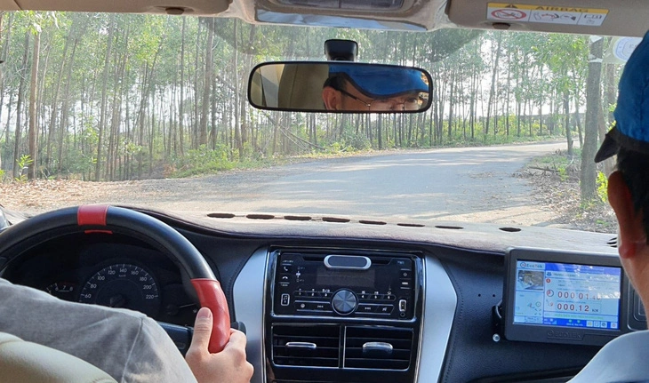
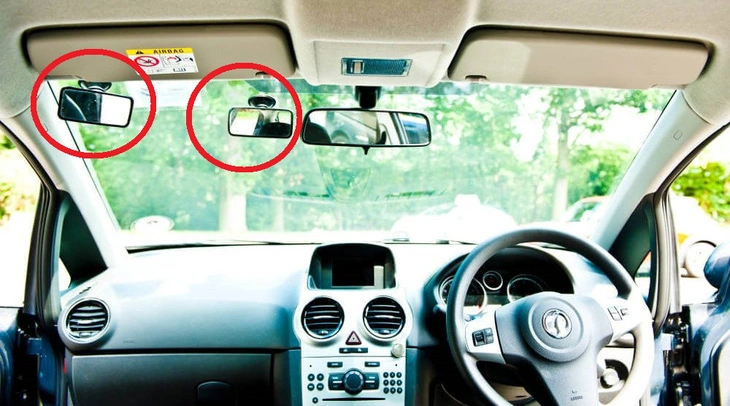

Trong khi đó, phương tiện học thật là ô tô tập lái có thể vẫn chưa có đủ để thực hành an toàn và chất lượng. Ít nhất là so với đào tạo lái ô tô Anh quốc.
Theo quy định hiện hành, ô tô tập lái Việt Nam hầu như chỉ khác ô tô thông thường ở "hệ thống phanh phụ bố trí bên ghế ngồi của giáo viên dạy thực hành lái ô tô". Trong trường hợp khẩn cấp, giáo viên can thiệp bằng cách đạp phanh phụ để hạn chế tốc độ hoặc dừng ô tô. Ngoài ra, giáo viên còn có thể nhoài người sang kéo tay lái để điều chỉnh hướng đi.
Còn ô tô tập lái Anh quốc thì được trang bị cả bàn đạp phanh phụ (dual brake), ly hợp phụ (dual clutch), chân ga phụ (dual accelerator) và đặc biệt là gương chiếu hậu phụ (extra rear-view mirror), gương quan sát mắt (eye check mirror).
Ly hợp hay "côn" là cơ cấu để người lái đóng hoặc ngắt truyền động từ động cơ sang hộp số, từ đó điều khiển việc vận hành ô tô. Bàn đạp ly hợp phụ được thiết kế để giáo viên ngắt truyền động khi xuất hiện nguy cơ, tránh những di chuyển bất ngờ cho phương tiện. Nó có thể sử dụng riêng hoặc kết hợp với bàn đạp phanh phụ, tương tự như thao tác kiểm soát tốc độ của người lái ô tô.
Có thể thấy rằng với trường hợp người học đạp nhầm chân ga thay vì chân phanh, nếu giáo viên vừa ngắt được ly hợp vừa phanh thì rõ ràng sẽ hiệu quả và an toàn hơn so với chỉ đạp phanh.
Ngoài ra, giáo viên còn có thể dùng bàn đạp ly hợp phụ để hướng dẫn người học thao tác với ly hợp (chính) hay ngắt nhẹ để hỗ trợ hoặc cảnh báo người học trong quá trình tập lái.
Còn chân ga kép dùng để giáo viên tăng tốc nhanh, thoát khỏi nguy hiểm khi mà người học không xử lý kịp thời.
Gương chiếu hậu trong ô tô dùng cho người lái quan sát phía sau để đảm bảo an toàn trước, trong và cả sau khi giảm tốc, dừng, lùi ô tô, trước và trong khi chuyển hướng, vượt hoặc quay đầu. Bởi các phương tiện, người đi đường, chướng ngại hoàn toàn có thể bất ngờ xuất hiện.
Sử dụng gương chiếu hậu bên trong và ngoài đúng cách là một trong những bài học cơ bản của kỹ thuật lái ô tô an toàn và phải được luyện tập thành thói quen.
Gương chiếu hậu phụ thực chất là một chiếc gương chiếu hậu trong thứ hai được lắp thêm để giáo viên quan sát về phía sau với tầm nhìn như ngồi ở vị trí lái. Giáo viên cần phải liên tục quan sát gương chiếu hậu như người lái để phòng ngừa rủi ro và kịp thời hỗ trợ người học.
Đáng tiếc là do không có gương phụ này, nên hiện nay người học lái ô tô nước ta chỉ có thể quan sát gương chiếu hậu ngoài. Gương chiếu trong hầu như chỉ dành cho giáo viên.
Điều này dẫn đến kỹ năng lái ô tô, bao gồm khả năng quan sát, đánh giá và ra quyết định sẽ hình thành một cách hạn chế và khiếm khuyết. Không những vậy, do không có thói quen quan sát giao thông phía sau nên khi buộc phải kiểm tra gương chiếu hậu, như lúc lùi ô tô, thì cũng sẽ không có được mức độ thành thạo cần thiết để đảm bảo an toàn.
Để đánh giá mức độ hình thành kỹ năng, giáo viên cần thấy được mắt người học nhìn đi đâu, trong khoảng bao lâu khi lái ô tô, đặc biệt là có sử dụng các gương chiếu hậu để kiểm tra giao thông trước khi thao tác hay không
Đồng thời, giáo viên còn quan sát được biểu cảm khuôn mặt nói riêng và ngôn ngữ cơ thể nói chung để đánh giá người học, từ đó có cách thức hướng dẫn hiệu quả. Đây là điều đặc biệt quan trọng đối với giảng dạy lấy người học làm trung tâm.
Cả hai gương này đều không làm ảnh hưởng đến tầm nhìn về phía trước của người học lẫn giáo viên.
Tóm lại, quy định tiêu chuẩn ô tô tập lái hiện nay còn chưa đủ trang thiết bị chuyên dùng để đảm bảo an toàn. Đây đồng thời cũng là những phương tiện hỗ trợ hiệu quả cho tiến trình dạy và học thực hành lái ô tô.
Việc quy định bắt buộc phải có những trang thiết bị này trên ô tô tập lái ở nước ta là hoàn toàn khả thi và tốn kém không đáng kể, bởi các loại gương đều có bán sẵn trên thị trường, ly hợp phụ và chân ga phụ thì có thể chế tạo dễ dàng tại các xưởng cơ khí nhỏ.
hi anh